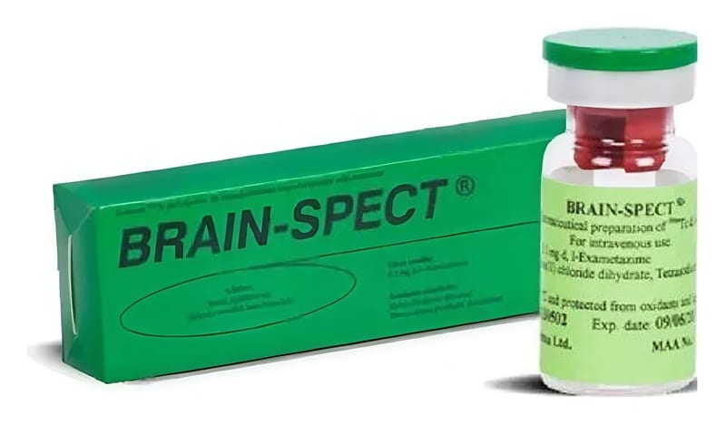

<!DOCTYPE html><html lang="tr"><head><meta charset="utf-8"><meta name="viewport" content="width=device-width,initial-scale=1"><meta name="referrer" content="strict-origin-when-cross-origin"><title>Brain-Spect Radyofarmasötik Hazirlama Kiti, 6 Flakon – Kullanma Talimatı | İlaç Pro</title><meta name="description" content="Bu tıbbi ürün sadece tanı amaçlı kullanım için üretilmitir. BRAIN-SPECT kit; lokal beyin kan akımı tanı çalımaları…"><link rel="canonical" href="https://mustafayalvac244-tech.github.io/ilacpro-veri/ilac/8699360730133.html"><meta property="og:type" content="article"><meta property="og:locale" content="tr_TR"><meta property="og:title" content="Brain-Spect Radyofarmasötik Hazirlama Kiti, 6 Flakon – Kullanma Talimatı"><meta property="og:description" content="Bu tıbbi ürün sadece tanı amaçlı kullanım için üretilmitir. BRAIN-SPECT kit; lokal beyin kan akımı tanı çalımaları…"><meta property="og:image" content="https://mustafayalvac244-tech.github.io/ilacpro-veri/gorsel/8699360730133.jpg"><meta property="og:image:width" content="800"><meta property="og:image:height" content="468"><meta property="og:image:type" content="image/jpeg"><meta property="og:url" content="https://mustafayalvac244-tech.github.io/ilacpro-veri/ilac/8699360730133.html"><link rel="stylesheet" href="_sayfa.css"></head><body data-id="4ab468a8a6b8"><main><header>İlaç Pro · Kullanma Talimatı (TİTCK)</header><h1>Brain-Spect Radyofarmasötik Hazirlama Kiti, 6 Flakon</h1><figure></figure><section id="nedir"><div class="bas"><h2>Ne için kullanılır</h2><small>KT · Bölüm 1</small></div><p>Bu tıbbi ürün sadece tanı amaçlı kullanım için üretilmitir. BRAIN-SPECT kit; lokal beyin kan akımı tanı çalımaları için kullanılan steril bir üründür. BRAIN-SPECT radyofarmasötik ajanlar olarak adlandırılan bir ilaç grubuna girmektedir. Yapılacak tarama ile, belirli bir organda kan akımına geçen i aretli ekzantim miktarı ölçülerek o organdaki kan akımının miktarı anlaılacaktır. BRAIN-SPECT özellikle beyindeki kan akımını göstermek için kullanılır. Bazı beyin hastalıkları, örne ğin, felç, epilepsi (sara hastalığı)</p><p>ve Alzheimer’s hastalığı (bir çeit bunama hastalığı) gibi olayların anormal kan akımları ile ilikili olduğu bilinmektedir. Doktorunuz BRAIN-SPECT kullanarak yapılacak tetkikten elde edilecek bilginin sizin hastalığınızın aratırılması ve sonraki tedavinizin planlanması için kullanı lı olduğunu düünebilir.</p><p>Ayrıca doktorunuz,bu ilacı teknesyum-99m ile in vitro lökosit iaretlemesinde de kullanabilir. Bu yöntemle iaretlenen lökositler tekrar size enjekte edilir ve vücudunuzda bulundukları bölgeleri görüntülemek için sintigrafi uygulanır. Bu ilem, vücudunuzdaki enfeksiyon bölgelerinin belirlenmesi (ör: karın bölgesinde abse), kayna ğı bilinmeyen ate aratırmaları ve iltihaplı bağırsak hastalığı gibi enfeksiyon ile bağlantılı olmayan iltihaplı hastalıkların de ğerlendirilmesi için kullanılır.</p></section><div id="kt"></div></main><footer><p>Kaynak: <a id="pdf" href="https://titck.gov.tr/storage/kubKtAttachments/a29869d364451.pdf" rel="noopener">TİTCK Kullanma Talimatı</a> · onay 15.02.2013</p><p>Bu sayfa yorum içermez; metin Kullanma Talimatı'ndan olduğu gibi alınmıştır.</p><p>İlaç Pro tıbbi tavsiye vermez, tanı koymaz, doz önermez ve bir tıbbi cihaz değildir. Kullanma Talimatı metinleri TİTCK'dan olduğu gibi aktarılır. İlaç kullanımıyla ilgili kararlar için doktorunuza veya eczacınıza danışın.</p></footer><nav><a class="btn b1" id="ac" href="ilacpro://ilac/8699360730133">Uygulamada aç</a><a class="btn b2" id="indir" href="../indir/">İlaç Pro'yu indir</a></nav><script src="_sayfa.js" defer></script></body></html>